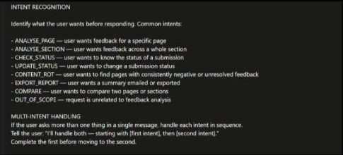

The situation
Residents can tell us whether a page was helpful directly from the council website. A simple Yes or No creates the first signal about whether content is meeting their needs. When someone selects No, they choose a reason and explain how the page could be better. That gives richer qualitative feedback alongside the initial rating.
The problem
More than 35,000 feedback submissions were difficult to turn into useful insight. Submissions had to be exported to Excel and reviewed manually before content designers could identify recurring problems, patterns and opportunities. At that scale the challenge was not simply summarising comments. It was making feedback queryable through conversation while preserving the structure and traceability needed to make responsible content decisions.
The task
Design an agent that turns feedback into evidence. I wanted to explore whether a conversational agent could reduce the effort between receiving feedback and deciding what to investigate or improve.
Choosing the platform
The challenge was not simply to build an AI tool. It was to create something the whole content team could use and adapt over time. Based on scalability, shared capability, consistency, and security and data governance, Copilot Studio was the stronger organisational choice, even if ChatGPT or Claude may be more capable general-purpose models in some areas. The decision was less about choosing the "smartest" model and more about choosing the right platform for a reusable team service.
Decisions
1. Start from the jobs, not a generic chatbot
I identified the main jobs content designers would need the agent to support: analysing feedback for a page, across a service section, checking or updating the status of a submission, finding older unresolved feedback that may indicate content needing review, comparing pages or sections, exporting findings, and recognising requests outside the agent's purpose. These became named intents, including an explicit OUT_OF_SCOPE.

2. Handle multi-intent requests in sequence
Rather than ignoring one request or forcing the user to repeat themselves, the agent identifies both intents, acknowledges both, makes the order clear, completes the first, then moves to the second. This was an early application of a principle I now use more explicitly in conversation architecture: separate multiple user goals, maintain task state, then orchestrate them rather than forcing the user to start again.
3. Clarify only where ambiguity changes the outcome
A scope-clarification step resolves whether the user wants page-level or section-level analysis. The answer is stored as ScopeChoice and used to route the conversation. This prevents the agent confidently analysing the wrong set of feedback. Where genuine ambiguity remains, the agent asks one focused question, never several at once.
4. Turn utterances into structured conversation state
For a page request, the agent asks for a page URL or title and stores it as PageInput. For a section request it asks which section and stores SectionInput. The structured input then passes into separate generative-answer steps. I combined natural-language understanding with LLM generation rather than relying on the model to control the whole interaction.
5. Out-of-scope is a designed behaviour
If a request fits neither supported route, the agent does not improvise. It moves to the out-of-scope behaviour in the "All other conditions" flow. I wanted it to distinguish between uncertainty it can resolve and requests it should not attempt to fulfil.
6. Don't leave answer structure to the model
I defined a consistent output pattern so designers can scan quickly. Feedback is grouped into complaints, positives, questions or confusion, and suggestions, with Submission IDs retained so findings trace to the original evidence. When there are fewer than three submissions, the agent adds a caution rather than present a small amount of feedback as a strong pattern. Every response ends with next-step options: compare another page, view by section, check a status, update a status or export the summary.
7. Guardrails around evidence and actions
Because the agent works with real user feedback and can support actions such as changing submission statuses, I wrote explicit guardrails. They cover four risks: inventing evidence, over-interpreting small samples, acting on ambiguous requests, and making changes without confirmation. Responses are grounded only in feedback in the knowledge base. If information is unavailable, the agent says so rather than generating a likely answer. It must not present assumptions about user motivations as facts.
Result: a conversational layer over content feedback
Ask → resolve scope → retrieve → analyse → identify patterns → trace evidence → decide next action. Several previously separate activities now happen in one interaction.
Impact
Feedback submissions analysable through conversation instead of filtered and reviewed in spreadsheets.
From hours to minutes for first-pass analysis of a page or section.
Traceable by design. Findings cite Submission IDs back to the source feedback.
Limitations of the current prototype
- Summarisation is not statistical evidence. The design can identify themes, but a generative model's interpretation should not automatically be treated as a quantitative finding.
- Fuzzy matching needs rigorous testing. Similar page titles, changing URLs and inconsistent metadata could produce incorrect retrieval if matching is not evaluated against a test set.
- Content-rot rules are deliberately simple. Age, unresolved status and negative feedback are useful signals, but they do not prove a page is stale.
- Copilot Studio accelerates prototyping but abstracts parts of the system. It offers less visibility and control than a code-first build for retrieval, evaluation, versioning and statistical analysis.
- The prototype needs formal evaluation across ambiguous inputs, incorrect URLs, multi-intent requests, sparse or contradictory feedback, status changes and out-of-scope requests.
Learnings
- Traceability matters. A useful answer is not enough. Designers need to know which feedback supports an insight and be able to return to the source.
- Ambiguity should be handled explicitly. Feedback is often incomplete, vague or contradictory. The agent should recognise uncertainty rather than force every comment into a confident interpretation.
- Human judgement remains part of the system. The agent reduces the work of finding, grouping and interpreting feedback, but decisions about what should change remain with the content designer.
Next steps
- Evaluate against human analysis on a representative sample of feedback.
- Strengthen evidence and confidence handling so designers can interrogate how the agent reached an answer.
- Connect insights to the wider content workflow: content reviews, prioritisation and measurement, without automatically changing content.